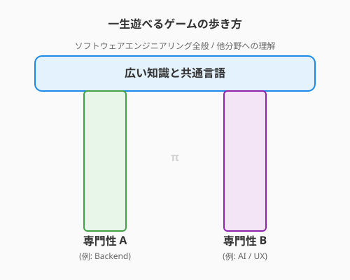

8.3 終わりのない旅——学びのサイクルとギルドの力
導入: 「最強の装備」は存在しない
この本の最後となる本節へ、ようこそ。ここまで辿り着いたあなたは、もう立派な冒険者です。
しかし、ソフトウェア工学という広大な世界において、「これで完璧」「この装備さえあれば一生安泰」という瞬間は訪れません。昨日までの最強の魔法（フレームワーク）が、明日には古いものになっているかもしれない。そんな変化の激しい世界です。
「また新しいことを覚えなきゃいけないのか……」と、ため息をつく必要はありません。それは裏を返せば、「このゲームは一生飽きることがない」ということです。明日にはまた新しいダンジョン（未踏の技術）が現れ、新しい魔法が生まれる。そんなエキサイティングな世界を生きていることを、ぜひ誇ってください。
好奇心のメンテナンス
学び続けるための最大のエネルギー源は、義務感ではなく「好奇心」です。
情報の取捨選択（キュレーション）
現代は情報の洪水です。すべてを追いかけるのは不可能ですし、その必要もありません。
- 不変の原理（アルゴリズム、OS、ネットワーク、設計原則）: 10年後も使える知恵。じっくり腰を据えて学ぶ。
- 流行の技術（ライブラリ、ツール）: 鮮度の高い知恵。必要になった時に、楽しみながらつまみ食いする。
このバランスを保つことが、知的な「息切れ」を防ぐコツです。
「3ヶ月後の自分」へのプレゼント
あなたが今日学んだこと、解決したエラーの記録を、ブログやメモに残しておきましょう。それは未来の自分への、そして世界中のどこかで同じ問題に悩む冒険者への、最高のプレゼントになります。アウトプットこそが、最も深いインプットになるのです。
コミュニティという名のギルド
一人で暗い部屋に籠もって学ぶのは限界があります。外の世界（コミュニティ）へ飛び出しましょう。
- 勉強会とカンファレンス: 同じ志を持つ仲間と出会い、熱量を共有する場です。
- オープンソース（OSS）: 世界中の天才たちが書いたコードを読み、貢献できる「究極の教科書」です。
- SNS・技術ブログ: ゆるい繋がりから、思いがけないチャンスや知見が舞い込んできます。
「教えることは、二度学ぶこと」——。あなたが学んだばかりの知識こそ、今まさに始めたばかりの誰かにとって、最も分かりやすい教えになるのです。
キャリアの羅針盤
あなたのキャリアを、RPGのスキルツリーのように描いてみましょう。

T型人材からπ型人材へ
まずは一つの分野（例：Pythonバックエンド）を深く掘り下げます（Tの縦棒）。その過程で得た「学び方」を応用して、他の分野（例：UI/UX、AI、クラウド）へと横に広げていきます。 複数の強みを掛け合わせることで、あなたにしか解決できない「ユニークなクエスト」が舞い込むようになります。
「不変の原理」に根ざす
技術の流行が激しいからこそ、設計原則やアルゴリズムといった「根っこ」を大切にしてください。根っこが深ければ、枝葉（トレンド）がどれだけ変わっても、あなたは揺るぎないエンジニアであり続けられます。
まとめ
- New Game+: 学びは「終わりのある苦行」ではなく、「一生遊べるゲーム」の続きである。
- 不変と流行のバランス: 10年後も使える原理原則と、最新のトレンドをバランスよく吸収する。
- アウトプットの力: 自分のために、そして誰かのために、学んだことを発信し続ける。
- コミュニティの熱量: 仲間と繋がり、知を共有することで、成長は加速し、孤独は消える。
- 楽しむ勇気: 変化を楽しみ、好奇心の赴くままに、新しい魔法を試し続ける。
AIへの詠唱例
私は今後1年間で[目指すエンジニア像]になりたいと考えています。
現在の私のスキルセット[現在のスキル]を踏まえて、
「不変の原理」と「最新トレンド」をバランスよく配置した
学習ロードマップを提案してください。